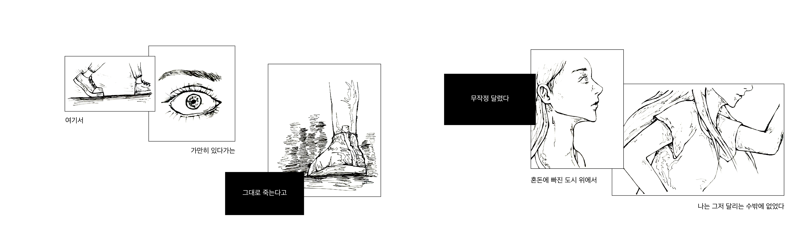
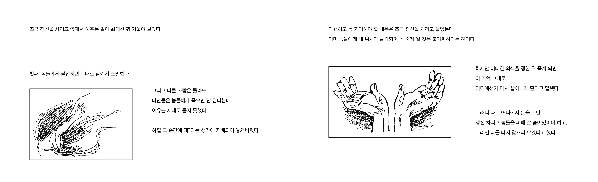
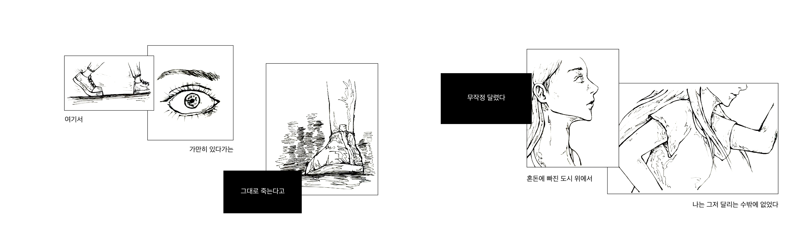
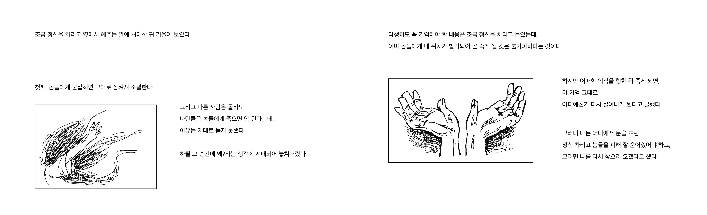

LOOP
같은 방식의 죽음을 세 번 경험하게 되는 주인공. 하지만 매 죽음마다 주인공의 환경, 경험, 감정, 사고 등은 큰 변화를 겪게 된다. 아무것도 준비되지 않은 채 갑자기 맞게 된 죽음, 희망적이었던 상황을 단숨에 꺾어버린 절망 속에서 맞이한 죽음, 더 이상 삶에 대한 의지가 남아있지 않은 상태에서 맞이한 죽음까지 세 번의 죽음을 겪는 동안 변화하는 조건들과 이에 따른 주인공의 의식과 감정 변화를 통해, 주인공과 같은 죽음에 맞닥뜨린다면 나는 어떻게 느끼고 사고할 것인지 또는 어떠한 기준 아래 결단을 내릴 것인지 독자 스스로만의 결말을 생각하도록 한다.
오수경 mamoru_soo@naver.com
 


